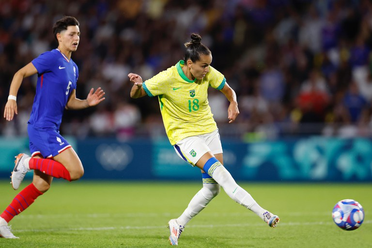

historia do futebol olimpico
A história do futebol olímpico remonta a 1900, quando o esporte foi incluído pela primeira vez nos Jogos Olímpicos em Paris. Naquele evento, as competições eram limitadas a times amadores, e o torneio foi disputado apenas entre clubes. O futebol começou a ganhar popularidade nas edições seguintes, com o torneio se tornando um destaque nas Olimpíadas.
Em 1924, em Paris, o torneio olímpico de futebol passou a ter uma estrutura mais organizada, com a participação de seleções nacionais. Desde então, o futebol olímpico tem sido uma vitrine para talentos emergentes e uma oportunidade para os países se destacarem internacionalmente. No entanto, a partir de 1984, a FIFA permitiu a participação de jogadores profissionais, embora houvesse restrições, como a limitação de apenas três jogadores acima de uma certa idade por equipe.
Os Jogos Olímpicos de 1992 em Barcelona marcaram uma nova era, com a introdução do torneio masculino sub-23, que permitiu a inclusão de jovens talentos, enquanto as seleções femininas passaram a competir em 1996, refletindo o crescimento do futebol feminino globalmente.
Ao longo das edições, o torneio olímpico tem visto grandes seleções e jogadores, mas sempre com uma abordagem distinta em relação à Copa do Mundo, focando na formação de atletas e no espírito olímpico de amizade e fair play. O futebol olímpico continua a ser uma importante plataforma para a promoção do esporte, unindo nações e celebrando a diversidade cultural através do futebol.